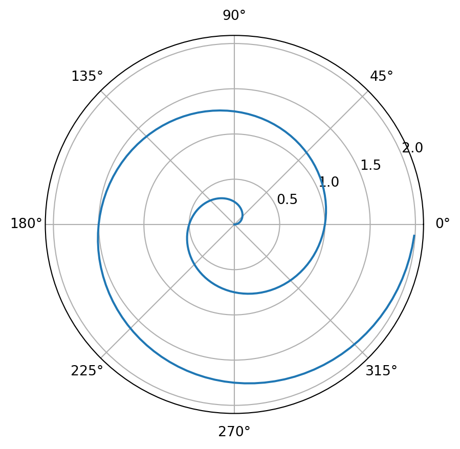

from ucimlrepo import fetch_ucirepo
import pandas as pd
import numpy as np
import matplotlib.pyplot as plt
import seaborn as sns
from sklearn.model_selection import train_test_split
from sklearn.linear_model import LogisticRegression
from sklearn import metrics
from sklearn.metrics import classification_report
from sklearn.metrics import confusion_matrix
from collections import CounterDiabetes Logistic Regression
Logistic regression
Using Logistic regression as a classifier (Machine Learning)
import numpy as np
import matplotlib.pyplot as plt
r = np.arange(0, 2, 0.01)
theta = 2 * np.pi * r
fig, ax = plt.subplots(subplot_kw={'projection': 'polar'})
ax.plot(theta, r)
ax.set_rticks([0.5, 1, 1.5, 2])
ax.grid(True)
plt.show()

# Exploratory data analysis
def eda (df):
head = df.head()
shape = df.shape
missing_values = df.isnull().sum()
return head, shape, missing_values
def prepData (data_file,
y_label_name):
df = pd.read_csv(data_file)
X = df.loc[:, df.columns != y_label_name]
#y = df.loc[:, df.columns == y_label_name]
y = df[y_label_name]
return df, X, y
def create_model (X_train,
y_train,
X_test,
model,
random_state,
max_iter):
model = LogisticRegression(random_state = random_state, max_iter = max_iter)
model.fit(X_train, y_train)
y_pred = model.predict(X_test)
return y_pred, model
def makeHeatmap (class_names, cnf_matrix):
fig, ax = plt.subplots()
tick_marks = np.arange(len(class_names))
plt.xticks(tick_marks, class_names)
plt.yticks(tick_marks, class_names)
sns.heatmap(pd.DataFrame(cnf_matrix), annot=True, cmap= "Oranges" ,fmt='g')
ax.xaxis.set_label_position("bottom")
plt.tight_layout()
plt.title('Confusion matrix', y=1.1)
plt.ylabel('Actual label')
plt.xlabel('Predicted label');
def calcPresRecall (y_test, y_pred, target_names):
report = classification_report(y_test, y_pred, target_names = target_names)
return report
def plotROC (X_test, y_test, model):
y_pred_proba = model.predict_proba(X_test)[::,1]
fpr, tpr, _ = metrics.roc_curve(y_test, y_pred_proba)
auc = metrics.roc_auc_score(y_test, y_pred_proba)
plt.plot(fpr,tpr,label="data 1, auc="+str(auc))
plt.legend(loc=4)
plt.show()data_file = "data/diabetes_binary_health_indicators_BRFSS2015.csv"
df = pd.read_csv(data_file)
head, shape, missing_values = eda(df)
display(head)
display(shape)
display(missing_values)
df, X, y = prepData(data_file = 'data/diabetes_binary_health_indicators_BRFSS2015.csv',
y_label_name = 'Diabetes_binary')
df| Diabetes_binary | HighBP | HighChol | CholCheck | BMI | Smoker | Stroke | HeartDiseaseorAttack | PhysActivity | Fruits | ... | AnyHealthcare | NoDocbcCost | GenHlth | MentHlth | PhysHlth | DiffWalk | Sex | Age | Education | Income | |
|---|---|---|---|---|---|---|---|---|---|---|---|---|---|---|---|---|---|---|---|---|---|
| 0 | 0.0 | 1.0 | 1.0 | 1.0 | 40.0 | 1.0 | 0.0 | 0.0 | 0.0 | 0.0 | ... | 1.0 | 0.0 | 5.0 | 18.0 | 15.0 | 1.0 | 0.0 | 9.0 | 4.0 | 3.0 |
| 1 | 0.0 | 0.0 | 0.0 | 0.0 | 25.0 | 1.0 | 0.0 | 0.0 | 1.0 | 0.0 | ... | 0.0 | 1.0 | 3.0 | 0.0 | 0.0 | 0.0 | 0.0 | 7.0 | 6.0 | 1.0 |
| 2 | 0.0 | 1.0 | 1.0 | 1.0 | 28.0 | 0.0 | 0.0 | 0.0 | 0.0 | 1.0 | ... | 1.0 | 1.0 | 5.0 | 30.0 | 30.0 | 1.0 | 0.0 | 9.0 | 4.0 | 8.0 |
| 3 | 0.0 | 1.0 | 0.0 | 1.0 | 27.0 | 0.0 | 0.0 | 0.0 | 1.0 | 1.0 | ... | 1.0 | 0.0 | 2.0 | 0.0 | 0.0 | 0.0 | 0.0 | 11.0 | 3.0 | 6.0 |
| 4 | 0.0 | 1.0 | 1.0 | 1.0 | 24.0 | 0.0 | 0.0 | 0.0 | 1.0 | 1.0 | ... | 1.0 | 0.0 | 2.0 | 3.0 | 0.0 | 0.0 | 0.0 | 11.0 | 5.0 | 4.0 |
5 rows × 22 columns
(253680, 22)Diabetes_binary 0
HighBP 0
HighChol 0
CholCheck 0
BMI 0
Smoker 0
Stroke 0
HeartDiseaseorAttack 0
PhysActivity 0
Fruits 0
Veggies 0
HvyAlcoholConsump 0
AnyHealthcare 0
NoDocbcCost 0
GenHlth 0
MentHlth 0
PhysHlth 0
DiffWalk 0
Sex 0
Age 0
Education 0
Income 0
dtype: int64| Diabetes_binary | HighBP | HighChol | CholCheck | BMI | Smoker | Stroke | HeartDiseaseorAttack | PhysActivity | Fruits | ... | AnyHealthcare | NoDocbcCost | GenHlth | MentHlth | PhysHlth | DiffWalk | Sex | Age | Education | Income | |
|---|---|---|---|---|---|---|---|---|---|---|---|---|---|---|---|---|---|---|---|---|---|
| 0 | 0.0 | 1.0 | 1.0 | 1.0 | 40.0 | 1.0 | 0.0 | 0.0 | 0.0 | 0.0 | ... | 1.0 | 0.0 | 5.0 | 18.0 | 15.0 | 1.0 | 0.0 | 9.0 | 4.0 | 3.0 |
| 1 | 0.0 | 0.0 | 0.0 | 0.0 | 25.0 | 1.0 | 0.0 | 0.0 | 1.0 | 0.0 | ... | 0.0 | 1.0 | 3.0 | 0.0 | 0.0 | 0.0 | 0.0 | 7.0 | 6.0 | 1.0 |
| 2 | 0.0 | 1.0 | 1.0 | 1.0 | 28.0 | 0.0 | 0.0 | 0.0 | 0.0 | 1.0 | ... | 1.0 | 1.0 | 5.0 | 30.0 | 30.0 | 1.0 | 0.0 | 9.0 | 4.0 | 8.0 |
| 3 | 0.0 | 1.0 | 0.0 | 1.0 | 27.0 | 0.0 | 0.0 | 0.0 | 1.0 | 1.0 | ... | 1.0 | 0.0 | 2.0 | 0.0 | 0.0 | 0.0 | 0.0 | 11.0 | 3.0 | 6.0 |
| 4 | 0.0 | 1.0 | 1.0 | 1.0 | 24.0 | 0.0 | 0.0 | 0.0 | 1.0 | 1.0 | ... | 1.0 | 0.0 | 2.0 | 3.0 | 0.0 | 0.0 | 0.0 | 11.0 | 5.0 | 4.0 |
| ... | ... | ... | ... | ... | ... | ... | ... | ... | ... | ... | ... | ... | ... | ... | ... | ... | ... | ... | ... | ... | ... |
| 253675 | 0.0 | 1.0 | 1.0 | 1.0 | 45.0 | 0.0 | 0.0 | 0.0 | 0.0 | 1.0 | ... | 1.0 | 0.0 | 3.0 | 0.0 | 5.0 | 0.0 | 1.0 | 5.0 | 6.0 | 7.0 |
| 253676 | 1.0 | 1.0 | 1.0 | 1.0 | 18.0 | 0.0 | 0.0 | 0.0 | 0.0 | 0.0 | ... | 1.0 | 0.0 | 4.0 | 0.0 | 0.0 | 1.0 | 0.0 | 11.0 | 2.0 | 4.0 |
| 253677 | 0.0 | 0.0 | 0.0 | 1.0 | 28.0 | 0.0 | 0.0 | 0.0 | 1.0 | 1.0 | ... | 1.0 | 0.0 | 1.0 | 0.0 | 0.0 | 0.0 | 0.0 | 2.0 | 5.0 | 2.0 |
| 253678 | 0.0 | 1.0 | 0.0 | 1.0 | 23.0 | 0.0 | 0.0 | 0.0 | 0.0 | 1.0 | ... | 1.0 | 0.0 | 3.0 | 0.0 | 0.0 | 0.0 | 1.0 | 7.0 | 5.0 | 1.0 |
| 253679 | 1.0 | 1.0 | 1.0 | 1.0 | 25.0 | 0.0 | 0.0 | 1.0 | 1.0 | 1.0 | ... | 1.0 | 0.0 | 2.0 | 0.0 | 0.0 | 0.0 | 0.0 | 9.0 | 6.0 | 2.0 |
253680 rows × 22 columns